Multi-Modal Pulmonary Disease Detection System
PulmoAI is one AI-assisted platform that supports the diagnosis of pneumothorax, pneumonia, tuberculosis and lung cancer from chest X-rays and CT scans, at the point of imaging, with a visual explanation for every result.
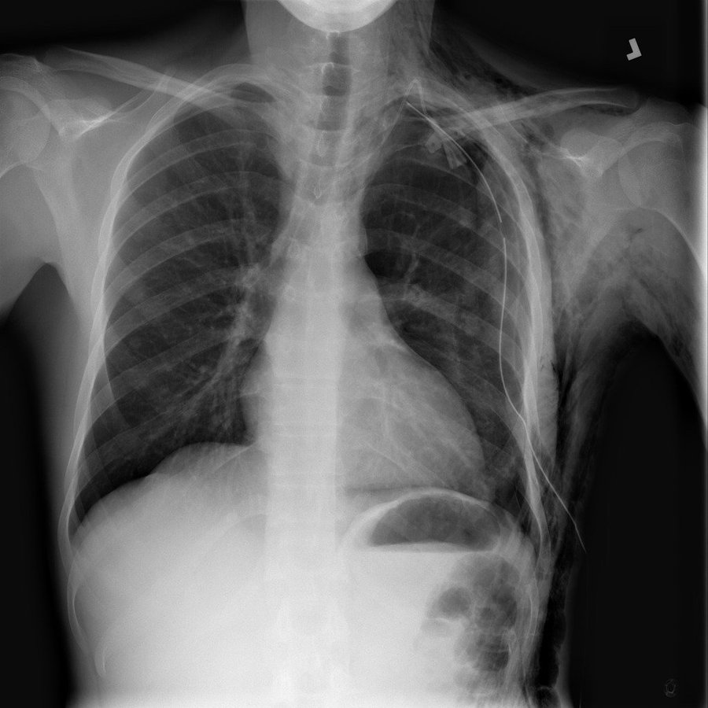
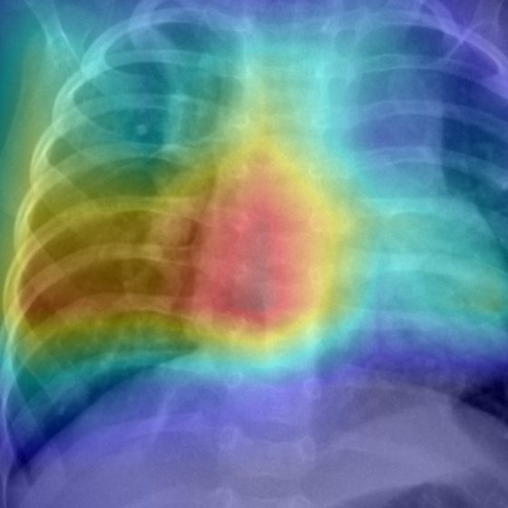
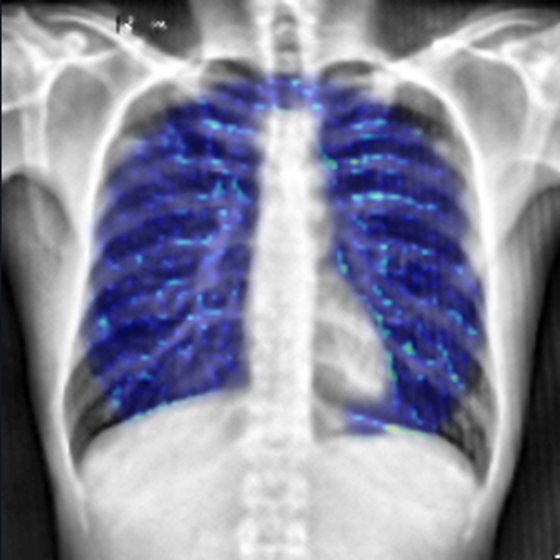
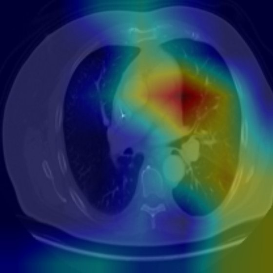
Introduction video
The problem, the team and the idea behind PulmoAI in a few minutes.
Open on YouTubeSystem demonstration
A walk through the platform: all four components, Full Screening, history and reports.
Open on YouTubeLiterature survey
Why Sri Lanka needs faster reading of chest images.
Sri Lanka has only about 0.78 radiologists per 100,000 people, against 8.5 in the United Kingdom [1], so patients can wait about a month for a scan while their images pass slowly between specialists. At the same time, lung disease is a growing burden.
- Lung cancer
- 10.9%of all cancer deaths in Sri Lanka, and the most common cancer in Sri Lankan men [2], [3]
- Tuberculosis
- ~9,000cases recorded each year [4]
- Pneumonia
- 3rdleading cause of hospital deaths, together with other chest infections [5], [6]
- Pneumothorax
- Minutesan emergency that must be spotted on an X-ray quickly
All four diseases are diagnosed from chest images, using X-ray or CT, and all of them rely on the same small pool of radiologists. This led to the Multi-Modal Pulmonary Disease Detection System: one AI-assisted platform that supports the diagnosis of all four diseases at the point of imaging, so that professionals get help and patients get answers faster.
References
- D. Karunaratne, "The growing problem of radiologist shortage in Sri Lanka," Korean Journal of Radiology, vol. 24, no. 10, pp. 941–943, 2023, doi: 10.3348/kjr.2023.0791.
- International Agency for Research on Cancer, "Sri Lanka – Statistics at a glance, 2024," Global Cancer Observatory (GLOBOCAN) fact sheet. Online
- M. Munas, M. Fernando, S. Dilhani, and S. Nawaratne, "Trends in lung cancer incidence in Sri Lanka from 2005–2019," Journal of the College of Community Physicians of Sri Lanka, vol. 27, no. 5, pp. 79–85, 2022, doi: 10.4038/jccpsl.v27i5.8431.
- Xinhua, "Sri Lanka reports up to 9,500 tuberculosis cases annually," Mar. 19, 2026. Online
- Medical Statistics Unit, Ministry of Health, Sri Lanka, Annual Health Bulletin 2021, Colombo, 2024. Online
- H. Ulak et al., "Economic costs of lower respiratory tract infections among hospitalized patients in southern Sri Lanka: a prospective cohort study," Health Economics Review, 2026, doi: 10.1186/s13561-026-00848-3.
Research gap
What existing tools leave out, and how each component responds.
-
Diagnosis is split across tools and specialists
Each lung disease has its own tool or its own specialist, and each tool reads only one kind of image. No single platform covers X-ray and CT for all four diseases.
-
Models accept any image
Most research models work under a closed-world assumption. They return a diagnosis even for a photo, a dental X-ray or an X-ray given to a CT model.
-
Answers are a black box
A class label without visual evidence is hard for a doctor to trust or check, and broad heatmaps rarely show what the doctor actually looks for.
-
Yes or no is not enough
Doctors also need severity, urgency, the disease type, or the location of the finding. Look-alike diseases are often left out of training, so they cause false alarms.
-
Accurate models are heavy
Many high-performing models need GPUs that district and base hospitals do not have.
How each component closes the gaps
| Gap | Pneumothorax | Pneumonia | Tuberculosis | Lung cancer |
|---|---|---|---|---|
| Rejects wrong images | Feature-distance check and aspect ratio gate | Autoencoder out-of-distribution gatekeeper | Centroid-based chest X-ray gatekeeper | CT suitability check and out-of-distribution check |
| Shows its evidence | Boundary-Aware Grad-CAM | Grad-CAM with affected lung area | TB-conditional Grad-CAM | Grad-CAM for each model branch |
| Goes beyond yes or no | Urgency level and attention-based indicators | Percentage of lung affected | Three classes and a bounding box | Four classes, including cancer type |
| Handles look-alikes and variety | TB and pneumonia X-rays used as negatives | Children and adult X-rays | Separate Non-TB class for look-alike conditions | Texture branch tested for subtype differences |
| Runs on ordinary hardware | EfficientNetB0 | MobileNetV2 | GhostNet and MobileViT | Not the main focus |
| Views the full 3D scan | Not applicable | Not applicable | Not applicable | DICOM viewer with three planes and 3D rendering |
Research problem and solution
From several hand-offs to one screen.
How can one AI-assisted platform screen a patient's chest X-ray and CT scan for pneumothorax, pneumonia, tuberculosis and lung cancer, reject unsuitable images, and explain each result, so that doctors can act without waiting for scarce radiologists?
Today
- General doctor
- Radiographer
- Radiologist
- Chest physician
Separate tests and reports, with waiting time at every step.
With PulmoAI
The same doctor uploads the scan, reads the findings and decides the next step.
The solution
- Every upload is checked first, and images that do not belong are rejected with a clear message.
- Three X-ray engines can run on one upload in parallel through a single Full Screening request.
- A CT engine classifies the lung cancer type and opens full DICOM scans in 3D.
- Every result comes with a heatmap, and where possible a severity, urgency or location.
- Results are saved to the patient's history and can be exported as PDF reports.
- Lightweight models keep the platform usable on standard hospital computers.
Research objectives
One main objective, four component objectives.
To build a unified, web-based clinical decision support system that detects pneumothorax, pneumonia, tuberculosis and lung cancer from chest X-rays and CT scans using explainable AI, rejects unsuitable images, and lets one doctor review a patient's full lung picture in one place.
-
Pneumothorax
Develop a lightweight, explainable pneumothorax detector that classifies chest X-rays, explains its decision with a Boundary-Aware Grad-CAM, and assigns an urgency level.
Navodya Dhanushka -
Pneumonia
Build a lightweight, transparent pneumonia detector that stays accurate across children and adults and filters out invalid inputs before diagnosis.
Dinuka Amarasekara -
Tuberculosis
Develop a lightweight multi-task GhostNet-MobileViT model that separates healthy, non-TB and TB X-rays and localises TB with explainability support.
Chanuka Nanayakkara -
Lung cancer
Build an explainable tool that classifies the lung cancer type from CT images, rejects unsuitable images and supports 3D viewing of DICOM scans.
Anuththara Bandara
Methodology
One platform, one backend, four research engines.
System architecture
The four components
Lightweight pneumothorax detection from chest X-rays using explainable AI with Boundary-Aware Grad-CAM
Navodya Dhanushka
A pneumothorax is air between the lung and the chest wall. On an X-ray, doctors look for a thin pleural line with no lung markings beyond it, which is easy to miss. Standard Grad-CAM shows a broad blob, not that line.
Novelty. A Boundary-Aware Grad-CAM that keeps the model's attention inside the lung, removes weak activations, draws the edge where attention stops with Canny edge detection, and finds the empty area beyond it. It reports attention coverage, boundary extent and pleural separation, and each positive result gets a High, Moderate or Low urgency level. The Grad-CAM map is only 7 × 7, so the edge is not pixel-accurate (boundary F1 about 0.05); the outputs are therefore presented as attention-based indicators, not measurements.
Model and data. EfficientNetB0, chosen over MobileNetV2 under the same three-phase training (AUC 0.871 against 0.844). Pneumothorax X-rays with masks from the SIIM-ACR challenge. Tuberculosis and pneumonia X-rays were then added to the not-pneumothorax class with normal X-rays, and the model was fine-tuned (AUC 0.953, then 0.970).
- AUC
- 0.970
- Recall
- 0.952
- Negative predictive value
- 0.988
- Accuracy
- 0.889
2,575 validation images (476 pneumothorax), threshold 0.50. Precision is 0.632: about one alert in three is a false alarm, accepted so that fewer cases are missed.
- Input check: aspect ratio gate and feature-distance validator
- Resize to 224 × 224 and CLAHE
- EfficientNetB0 classifier
- Boundary-Aware Grad-CAM for positive cases
- Attention-based indicators and urgency level
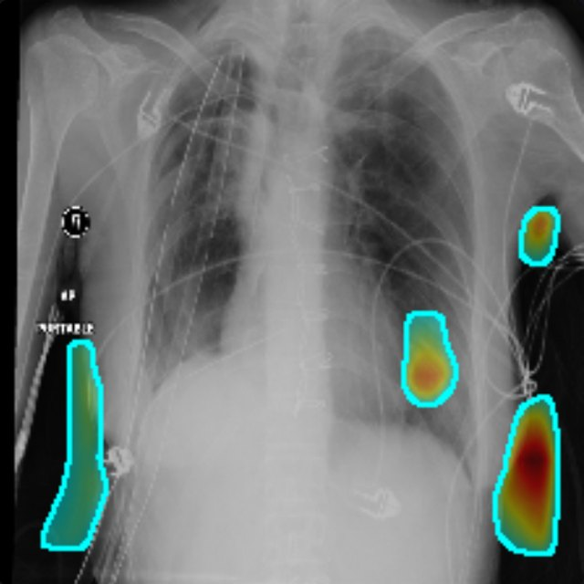
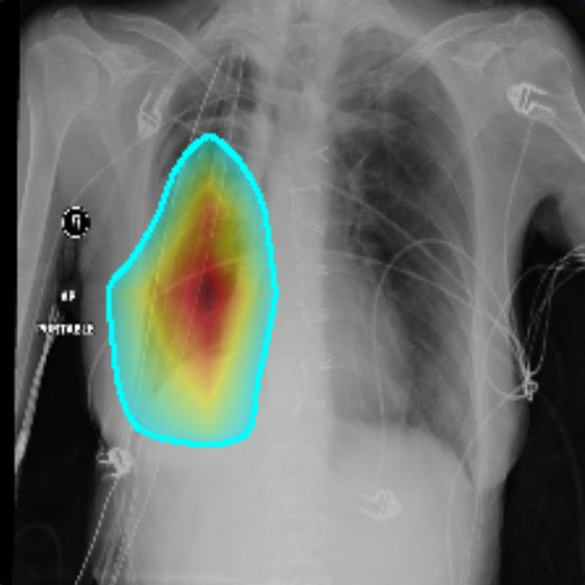
Drag the slider to compare the two explanations on the same X-ray.
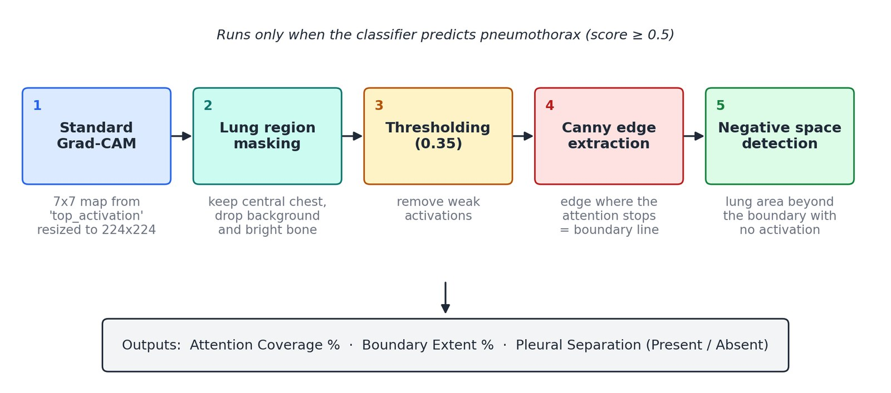
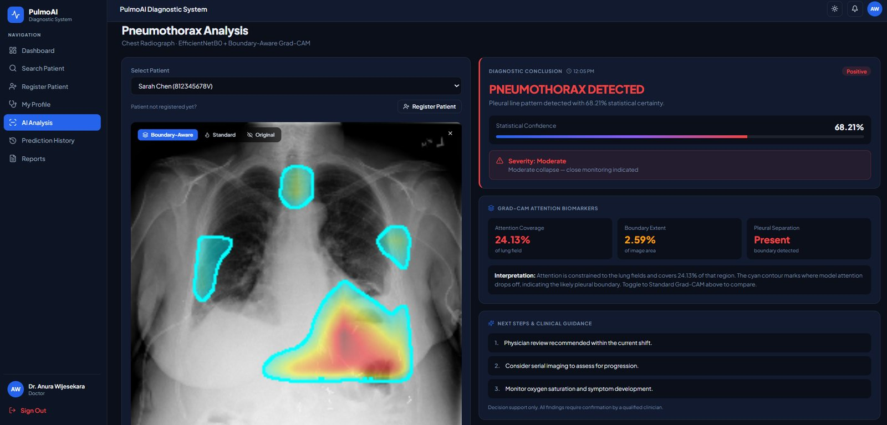
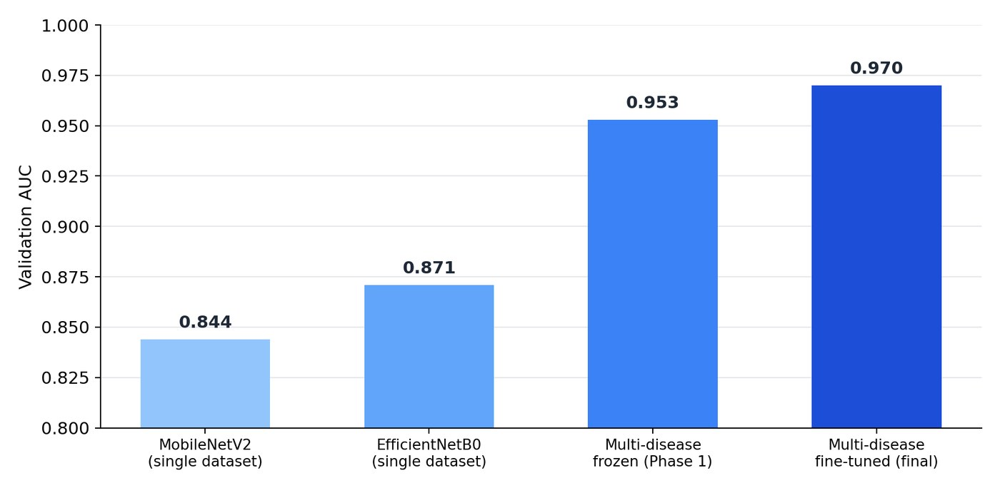
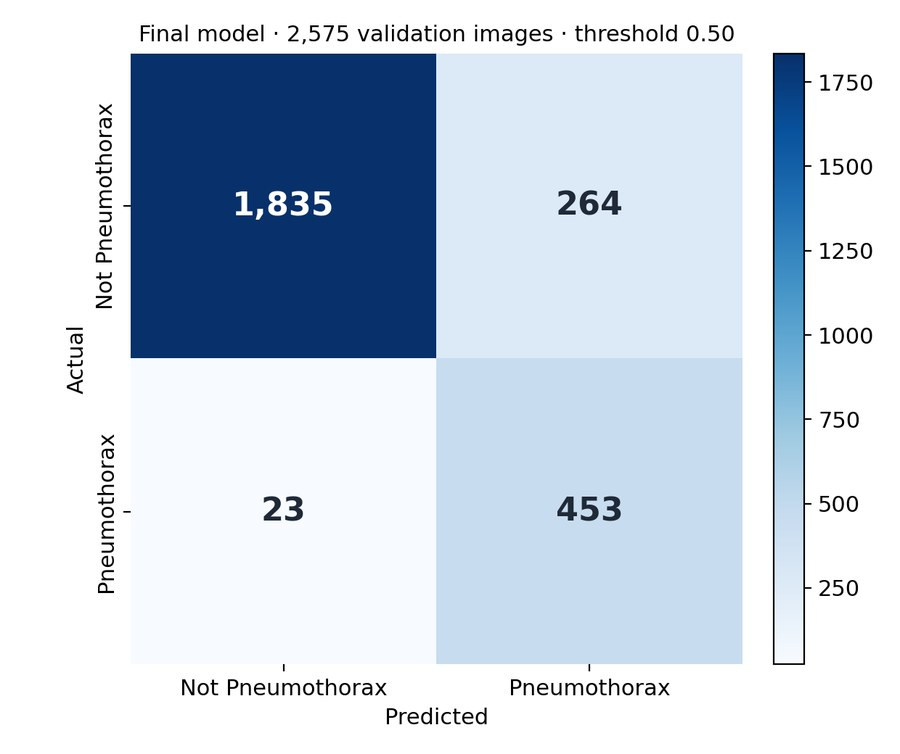
Lightweight X-ray pneumonia diagnostic engine and severity quantifier
Dinuka Amarasekara
Pneumonia needs a timely X-ray diagnosis, but radiologists are scarce. Existing tools work under a closed-world assumption and process invalid images without rejecting them. Many are heavy and tested on a single domain, such as children only.
Novelty. A resource-efficient MobileNetV2 classifier combined with an unsupervised autoencoder gatekeeper that rejects invalid inputs by Euclidean distance, before producing Grad-CAM explanations.
Data. Guangzhou paediatric chest X-rays and the RSNA adult dataset, 22,777 images, NORMAL and PNEUMONIA.
- Accuracy, children and adults
- 84%
- Accuracy, children
- 95%
- Recall, pneumonia
- 0.80
- Test images
- 4,882
Calibrated threshold 0.4756
- CLAHE, resize to 224 × 224
- Autoencoder gatekeeper (distance threshold 18.756)
- MobileNetV2 classifier
- Grad-CAM heatmap
- Lung area affected and activation intensity
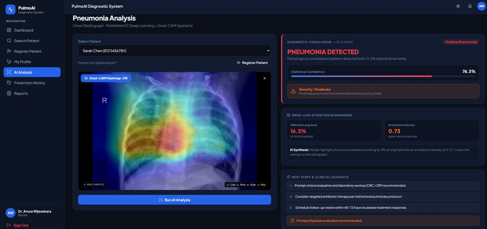
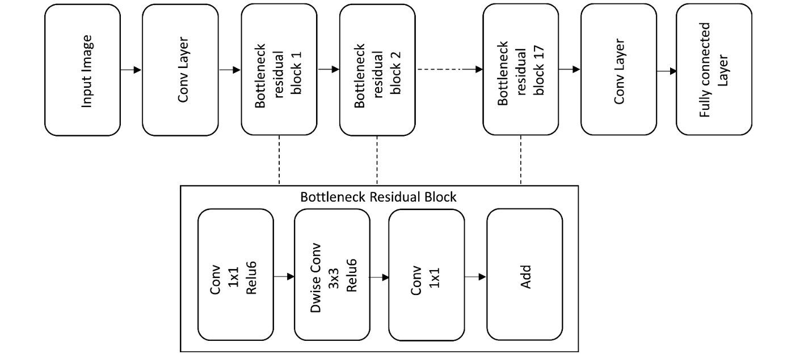
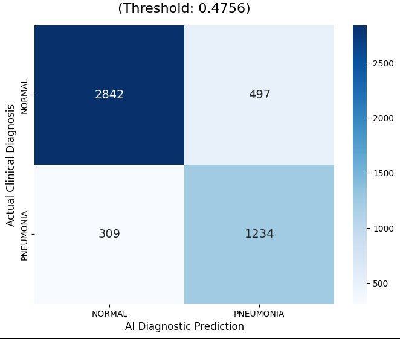
| Architecture | Data scope | Accuracy |
|---|---|---|
| AlexNet (transfer) | Small binary subset | 91–99% |
| Custom CNN | Single source, balanced | 99.6% |
| Lightweight CNN | Single source, children | 94.2% |
| MobileNetV2 (this work) | 22,777 images, children and adults | 95% / 84% cross-domain |
Tuberculosis identifier and pathology severity assessment (lung impact)
Chanuka Nanayakkara
Final implemented focus: lightweight multi-task TB classification, localisation and Grad-CAM. A validated severity score is future work.
TB research often stops at TB versus normal, but real screening also sees other abnormal X-rays that can look like TB. Many strong models are heavy or classification-only, with little spatial evidence.
Novelty. A custom lightweight multi-task GhostNet-MobileViT model. GhostNet modules extract local features cheaply, MobileViT adds global context, and one shared representation predicts three classes (Healthy, Non-TB, Tuberculosis) and a TB bounding box. A TB-conditional Grad-CAM explains positive results.
Data. Six public sources including TBX11K, Shenzhen and Montgomery. After SHA-256 duplicate removal: 29,803 unique X-rays: 20,861 training, 4,471 validation and 4,471 held-out test.
- Overall accuracy
- 90.3%
- TB recall
- 95.4%
- TB precision
- 79.5%
- TB F1-score
- 86.7%
Held-out test set of 4,471 unseen X-rays. Bounding-box localisation is not yet measured with IoU.
- Chest X-ray gatekeeper
- Bilateral filter, CLAHE, unsharp mask
- GhostNet and MobileViT feature fusion
- Three-class diagnosis and TB bounding box
- TB-conditional Grad-CAM
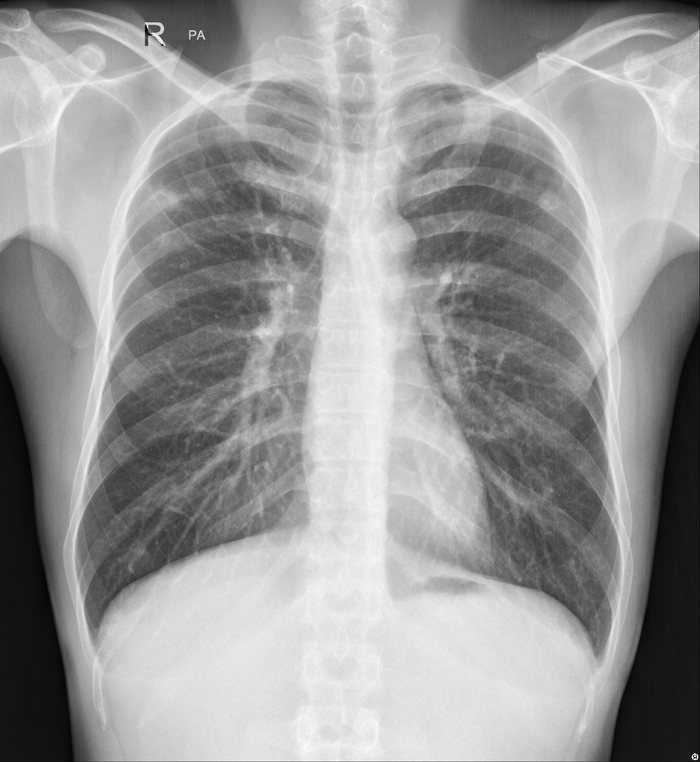
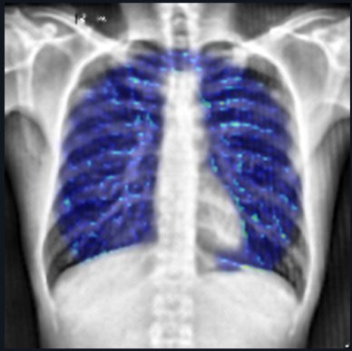
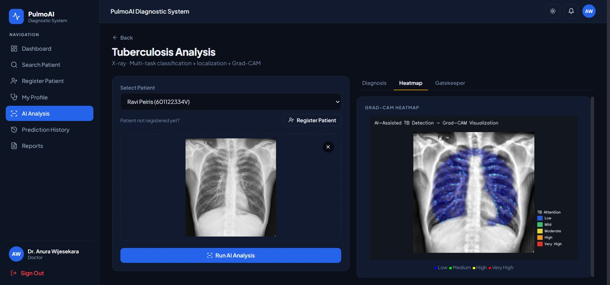
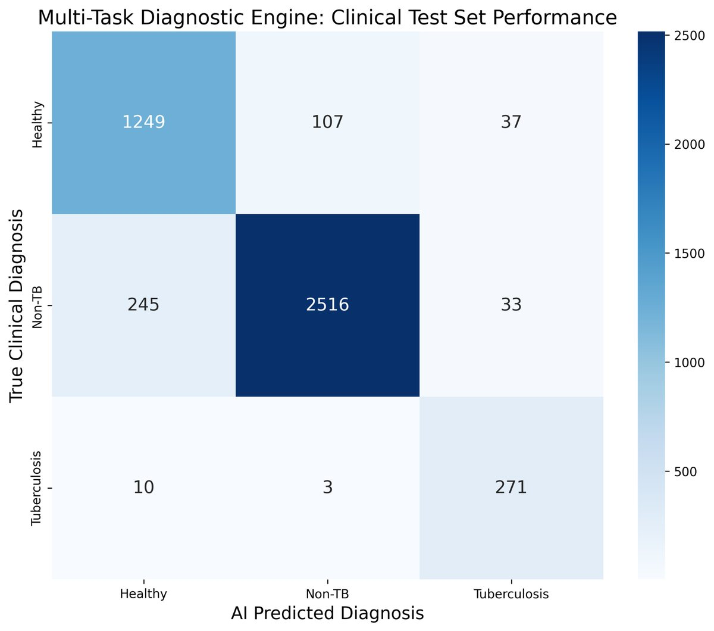
| Class | Precision | Recall | F1 |
|---|---|---|---|
| Healthy | 0.830 | 0.897 | 0.862 |
| Non-TB | 0.958 | 0.901 | 0.928 |
| Tuberculosis | 0.795 | 0.954 | 0.867 |
| Weighted | 0.909 | 0.903 | 0.903 |
3D CT-based lung cancer detection and localisation tool
Anuththara Bandara
Earlier work showed AI can spot lung cancer on CT, but most systems only say cancer or not, give no explanation, accept any image and cannot open real 3D DICOM scans. No one had tested whether a dedicated texture branch helps.
Our solution. A dual-path model: DenseNet121 for the big picture and a custom CNN for fine texture, classifying Adenocarcinoma, Large cell carcinoma, Squamous cell carcinoma and Normal. Grad-CAM for each branch, two safety checks, and a DICOM viewer with linked axial, coronal and sagittal planes and 3D rendering.
Data. Public Kaggle lung CT images: 2,335 for training and 385 for testing. Compared with ResNet50, MobileNetV2 and a single-path DenseNet121.
- Accuracy
- 84.4%
- AUC
- 0.972
- Recall
- 0.858
- Negative predictive value
- 0.949
385 test images. AUC, recall and NPV are averages over the 4 classes.
- CT suitability check
- Out-of-distribution check
- DenseNet121 and texture CNN
- Four-class probabilities
- Grad-CAM for each branch
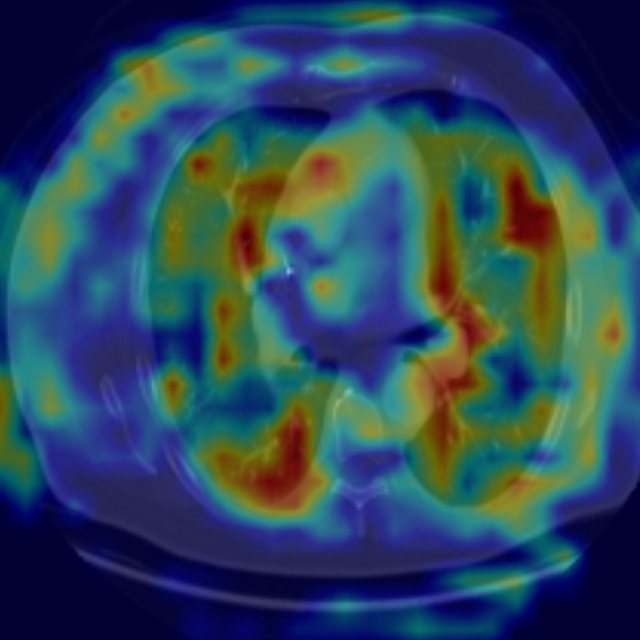
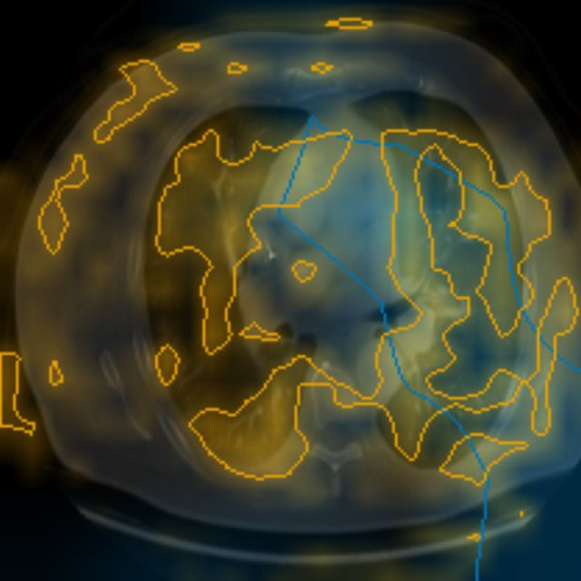
The DenseNet121 branch looks at the big picture. Its heatmap is broad, showing the overall region the model used.
The custom CNN branch focuses on fine texture, so its heatmap shows smaller, more local spots.
The combined view outlines both: blue for DenseNet121 and orange for the custom CNN.
Key finding. The model separates cancer from normal in 384 of 385 test images. The texture branch gave finer heatmaps but did not raise accuracy: the single-path DenseNet121 scored 88.83%. This is reported as an honest research result.
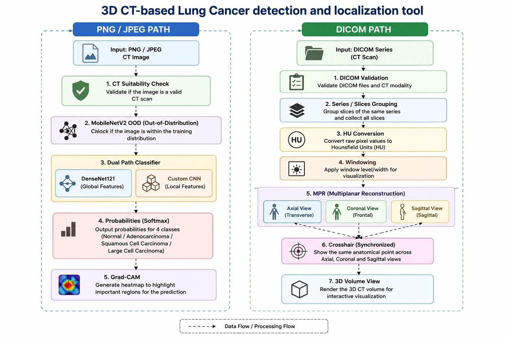
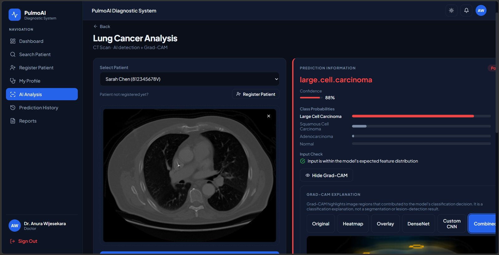
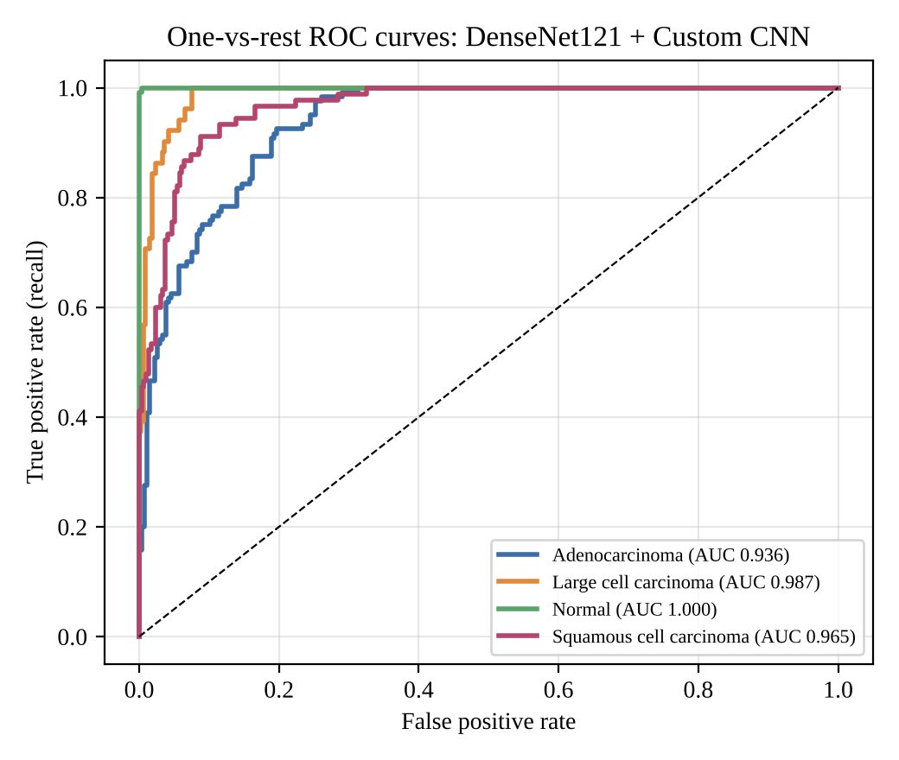
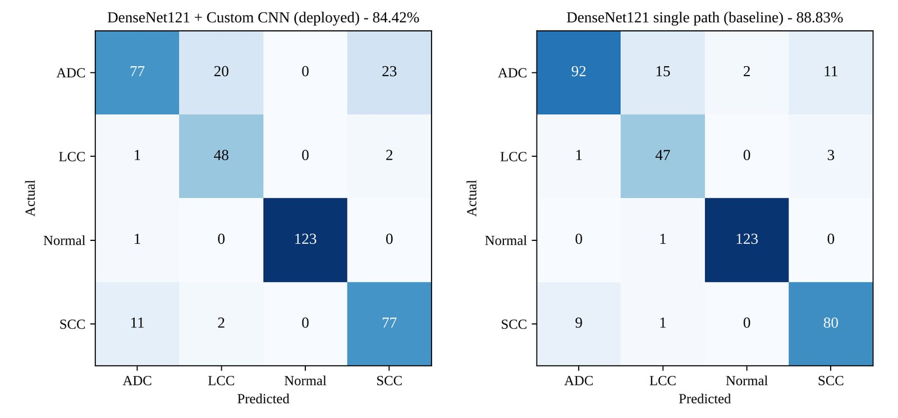
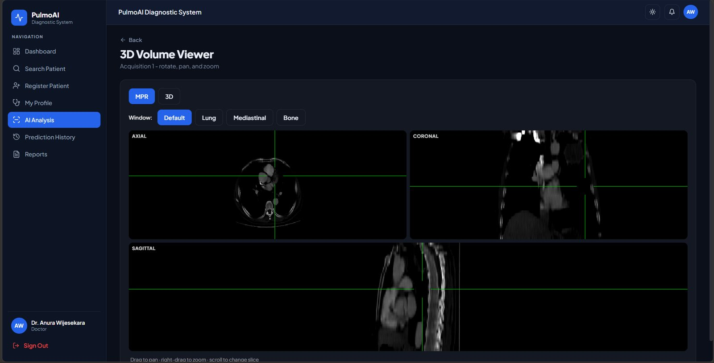
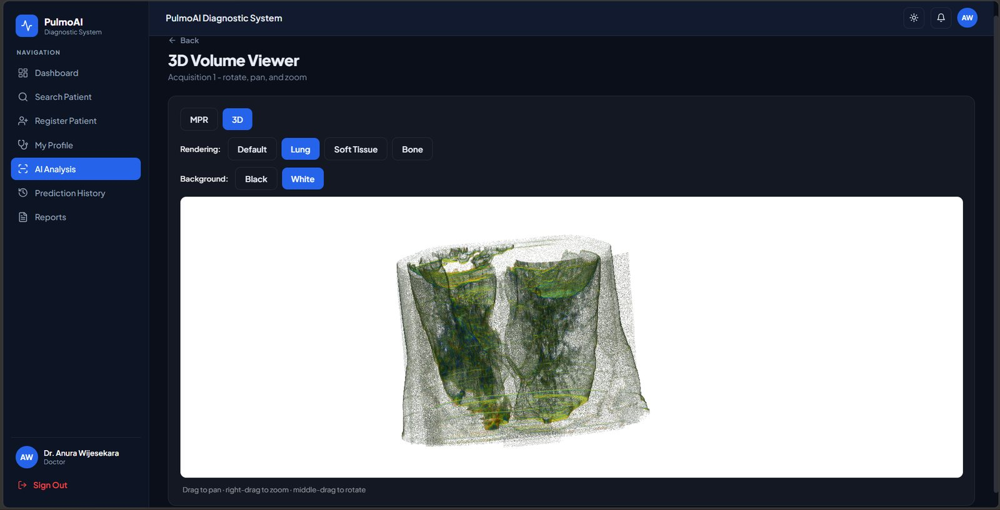
The platform
Screens from the PulmoAI web application that brings the four components together. Select a screen to enlarge it.
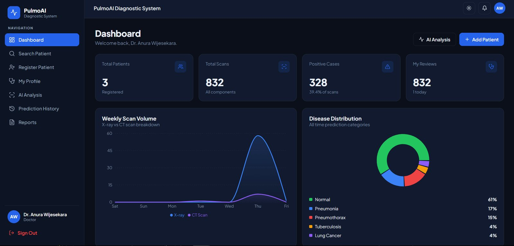
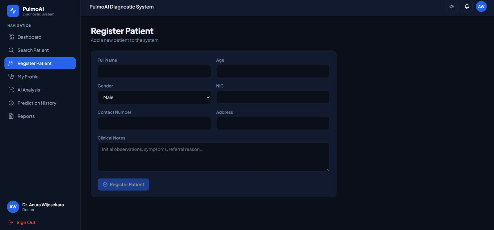
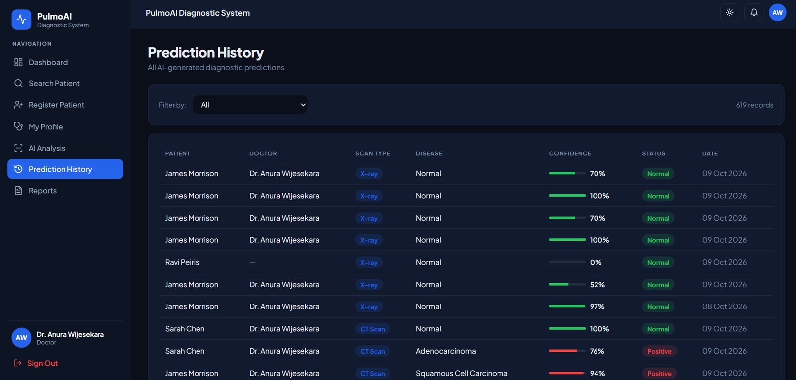
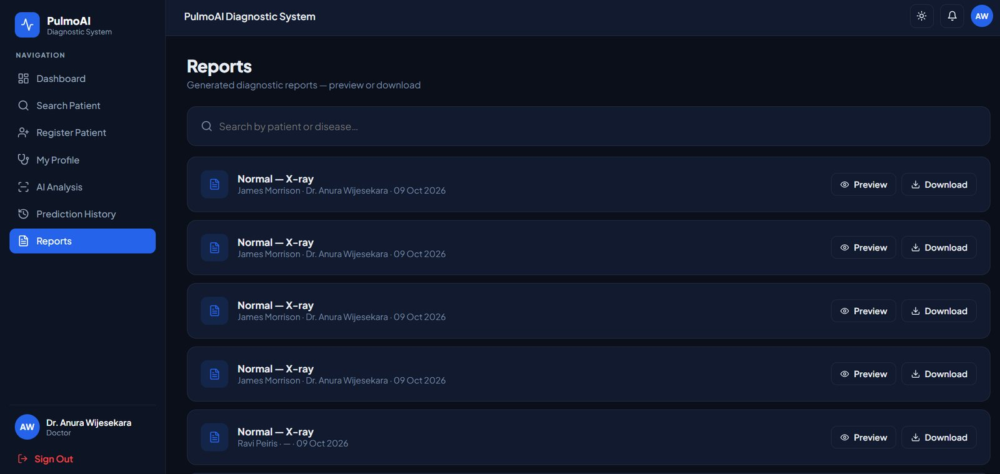
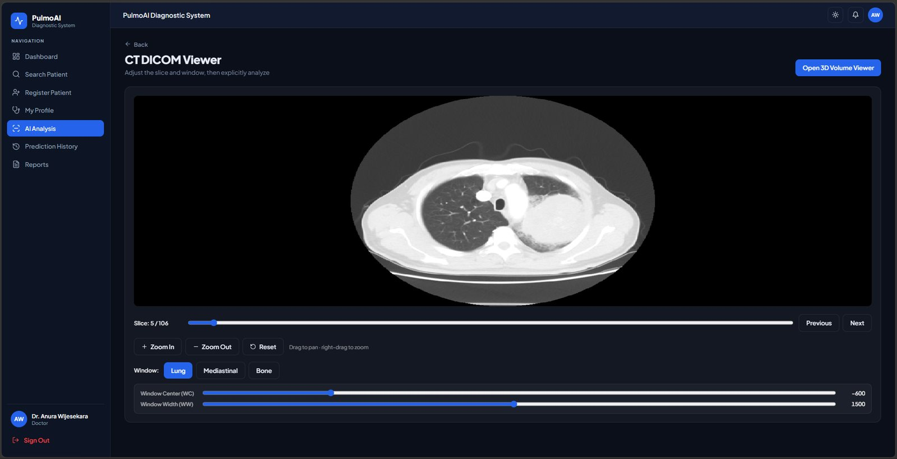
Technologies
The tools used to build and run PulmoAI.
AI and image processing
- Python
- TensorFlow
- Keras
- OpenCV
- NumPy
- scikit-learn
- Google Colab
Backend
- FastAPI
- Pydantic
- JWT authentication
Frontend
- React
- Vite
Database
- MongoDB
Tools and teamwork
- Docker
- GitHub
- GitHub Pages
- PyCharm
- Microsoft Planner
Milestones
The 2026 research project timeline.
-
Proposal submission
-
Proposal presentation
-
Progress presentation 1
-
Checklist submission
-
Progress presentation 2
-
Draft thesis submission
-
Website submission
-
Final checklist submission
-
Final presentation and viva
-
Website evaluation and logbook submission
-
Research paper submission
-
Final thesis submission
-
Research paper publication evidence
Downloads
Documents and slides from every stage, stored in Google Drive.
Documents
- DOCTopic assessmentOpen in Drive
- DOCProject charterOpen in Drive
- DOCProject proposalOpen in Drive
- DOCResearch paperOpen in Drive
- DOCResearch posterOpen in Drive
- DOCFinal reportOpen in Drive
Presentations
- SLIDESProposal presentationOpen in Drive
- SLIDESProgress presentation 1Open in Drive
- SLIDESProgress presentation 2Open in Drive
- SLIDESFinal presentationOpen in Drive
About us
The team behind R26-IT-065.
Supervision
-
Dr. Mahima Weerasinghe Supervisor Senior Lecturer (Higher Grade), Department of Computer Science, Faculty of Computing, Sri Lanka Institute of Information Technology LinkedIn
Team members
Contact us
Questions about the research, or a request for a demonstration.
Or email the project team at mmpddsystem@gmail.com